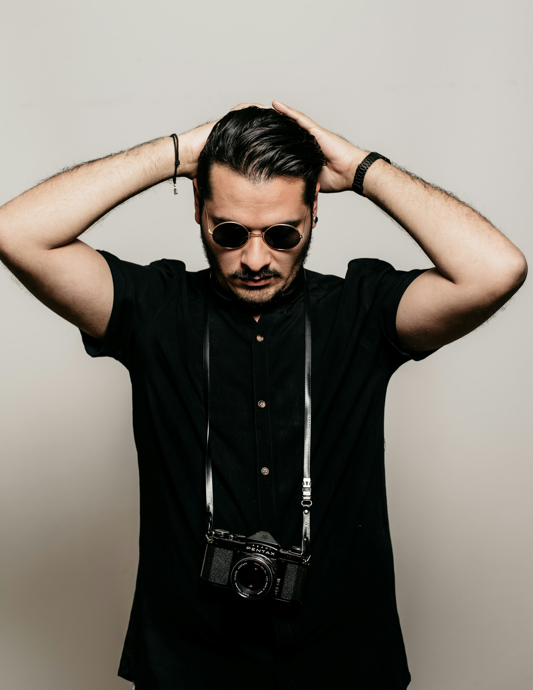

Wedding Photography
Wedding photography is my passion. I love capturing the emotions and special moments of one of the most important days in people's lives.
Hello and welcome to my photography portfolio! I'm John Doe, a professional photographer with a
passion for capturing moments that tell stories. Whether it's landscapes, portraits, or events, I
strive to create images that evoke emotion and leave a lasting impression.
Based in London, I have been working in the photography industry for over a decade, collaborating
with clients from various sectors. My work has been featured in numerous publications and
exhibitions, and I am always looking for new opportunities to explore and expand my creative
horizons.

Wedding photography is my passion. I love capturing the emotions and special moments of one of the most important days in people's lives.
Landscape photography allows me to capture the beauty and grandeur of the natural world. From majestic mountains to serene forests, each scene tells its own unique story.
Show house photography is a specialized field where I capture the beauty and details of properties for sale. This involves highlighting the best features of each home to attract potential buyers.